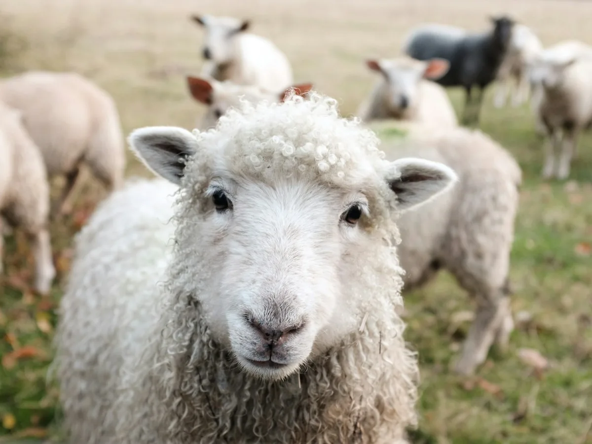

Sheep farming
Our own farms are part of the Bigfoot Australia story, with sheep rearing at the heart of the operation.
BIGFOOT AUSTRALIA
Our own land. Our own farming story. Bigfoot Australia brings sheep and goat rearing together with opportunities in livestock and meat exports.

ROOTED IN FARMING
Bigfoot Australia owns its farms and raises livestock, including sheep and goats. Farming is a part of our business at the source, alongside our focus on connecting Australian livestock and meat with international buyers.
Our farming and trade conversations come together through Bigfoot Meats in Singapore, giving buyers a connected starting point for their supply requirements.
OUR AUSTRALIAN FOCUS
From livestock rearing to conversations about international supply.
Our own farms are part of the Bigfoot Australia story, with sheep rearing at the heart of the operation.
Goat farming adds another part to our Australian livestock business and its connection to trade.
Discuss meat and live-animal export requirements, subject to product availability and destination requirements.
EXPORT ENQUIRIES
Every destination brings a different set of requirements. Share your market, product interest, volumes and preferred timing so our team can explore the next steps with you.
Discuss an export enquiryProduct or livestockWhat are you looking to source?
Destination & volumeWhere is it going, and how much do you need?
Timing & specificationsWhat does your order need to meet?
Wholesale meat supply and international trade, connected to our Australian story.
Explore SingaporeYOUR NEXT ORDER STARTS WITH A CONVERSATION
Start a conversation about Australian livestock, meat supply or export requirements.